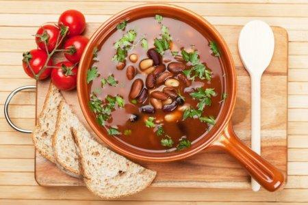

Red bean soup

Description
A red bean soup with sour cream
Ingredients
- 4 l water
- 0,5 kg red beans
- 0,5 l sour cream
- 1 onion per portion
- 0,5 tbsp salt
- 0,25 tbsp black pepper
- 0,25 tbps red pepper
- 2 bay leafs
Steps
- Soaking beans in 2 l hot water for 1 hour
- Adding 2 l water and the bay leafs -- cooking them for 45 minutes
- Adding sour cream (0,45 l sour cream + 2 tbsp wheat flour + 1 glass of water + 3 tbsp pot liquor) + salt + black pepper + red pepper -- cooking them for 15 minutes
- Adding 1 onion per portion
Odin Recipes